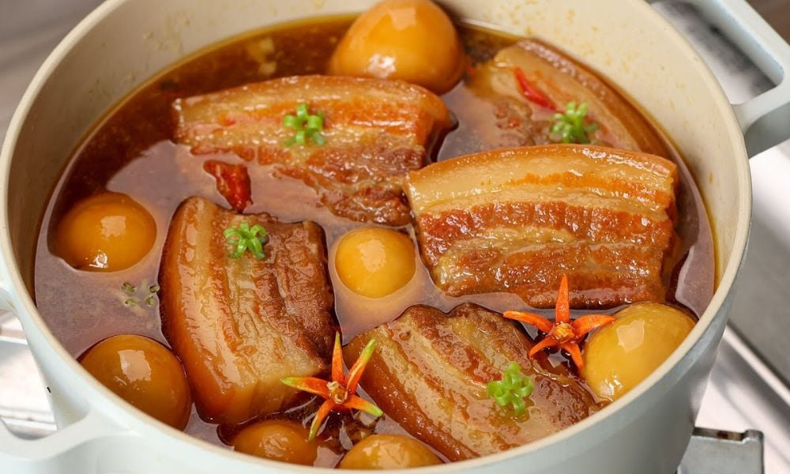

Liên hệ
Đăng ký
BÍ QUYẾT LÀM THỊT KHO TÀU MÈM BÉO, LÊN MÀU ĐẸP CHUẨN VỊ TRUYỀN THỐNG
⏰
Chuẩn bị
20 phút
🍳
Nấu / Nướng
60 phút
🍽
Khẩu phần
4
👨🍳
Độ khó
3/5MỤC LỤC
Thịt kho tàu là món ăn quen thuộc trong mâm cơm gia đình Việt, đặc biệt là vào những dịp sum họp. Thịt được kho mềm, béo nhưng không ngấy, thấm đều gia vị, kết hợp cùng trứng tạo nên hương vị đậm đà khó quên. Màu nâu cánh gián óng ánh cùng mùi thơm đặc trưng khiến món ăn trở nên vô cùng hấp dẫn. Khi ăn cùng cơm trắng nóng, từng miếng thịt tan nhẹ trong miệng mang lại cảm giác ấm cúng, gần gũi và đầy đủ dinh dưỡng. Nếu bạn đang muốn thay đổi khẩu vị cho bữa ăn gia đình hoặc chiêu đãi bạn bè vào dịp tụ họp thì thịt kho tàu chắc chắn là một lựa chọn tuyệt vời. Hôm nay hãy cùng tìm hiểu cách làm món thịt kho tàu thơm ngon ngay tại nhà nhé!

Thịt kho tàu mềm béo đậm đà hấp dẫn